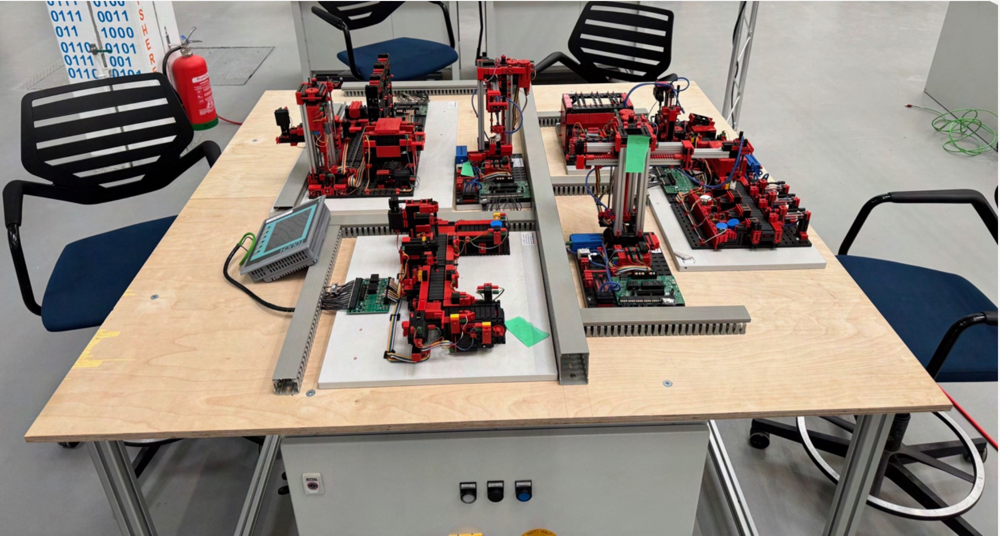

Aufbau einer automatisierten Fertigungslinie mit Fischertechnik
Im Rahmen meiner Ausbildung zum Elektroniker für Automatisierungstechnik bei Volkswagen durfte ich ein spannendes Praxisprojekt umsetzen: den Aufbau und die Planung einer automatisierten Fertigungslinie mit Fischertechnik-Modulen.
Projektidee
Die bestehende Anlage bestand aus mehreren einzelnen Fischertechnik-Modulen, die jeweils dezentral durch Siemens S7-1200 SPSen gesteuert wurden. Ziel des Projekts war es, diese dezentralen Stationen auf ein mobiles Gestell umzubauen und alle Steuerungen zentral in einem neuen Schaltschrank zusammenzuführen. Ein HMI-Panel sollte die Bedienung erleichtern. Die Kommunikation sollte zukünftig über PROFINET erfolgen.
Fazit
Dieses Projekt ermöglichte mir, mein Wissen in Elektrokonstruktion, Steuerungstechnik, SPS-Programmierung und Sicherheitsprüfung praktisch umzusetzen und weiter zu vertiefen. Besonders stolz bin ich auf die selbstständige Planung des Steuerstromkreises sowie die erfolgreiche HMI-Programmierung.
Ein besonderer Dank gilt meinem Team und dem Auftraggeber für die tolle Zusammenarbeit!
Durchführungszeitraum: 16.04.2025 – 13.05.2025
Projekt für die Abschlussprüfung Teil 2 zum Elektroniker für Automatisierungstechnik